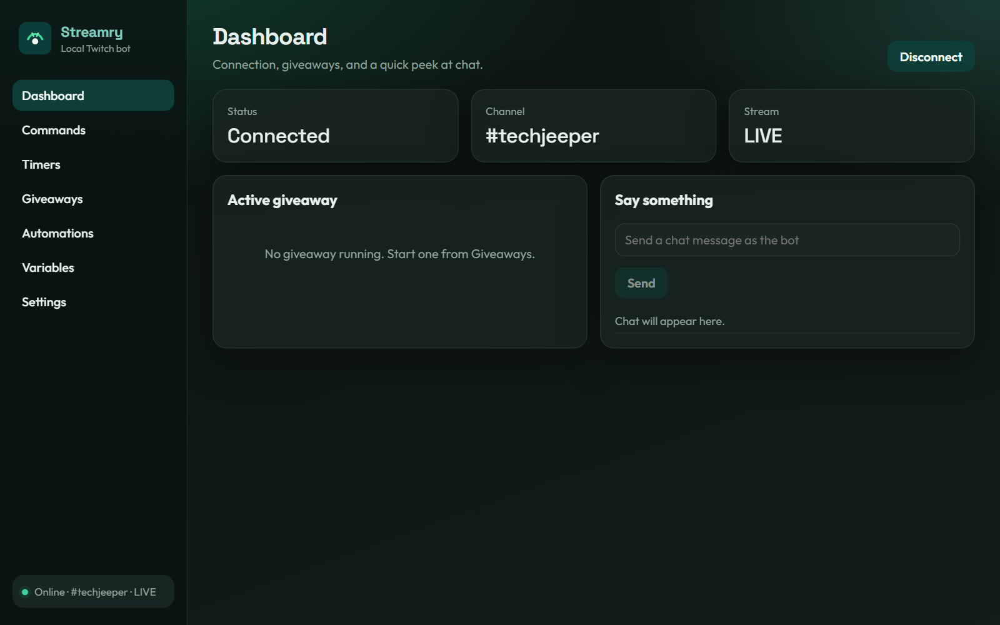
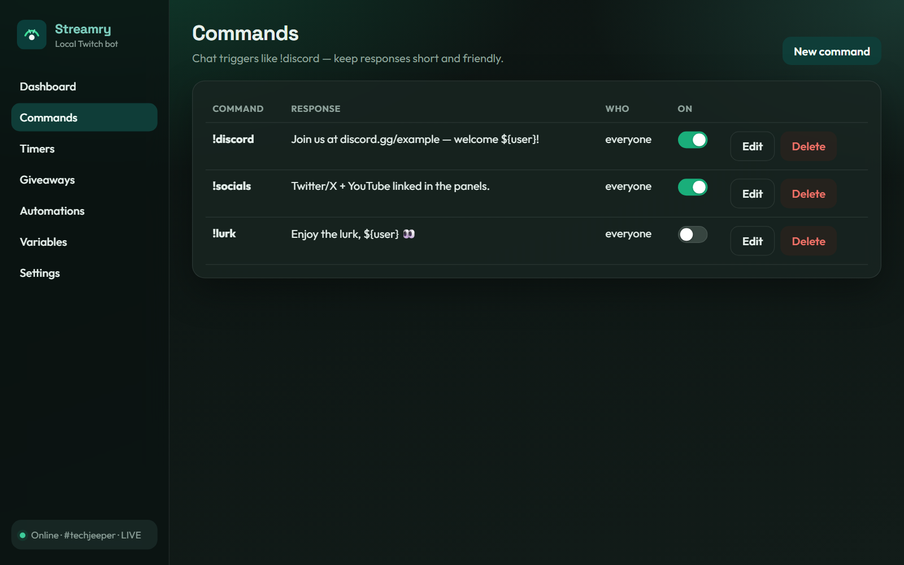
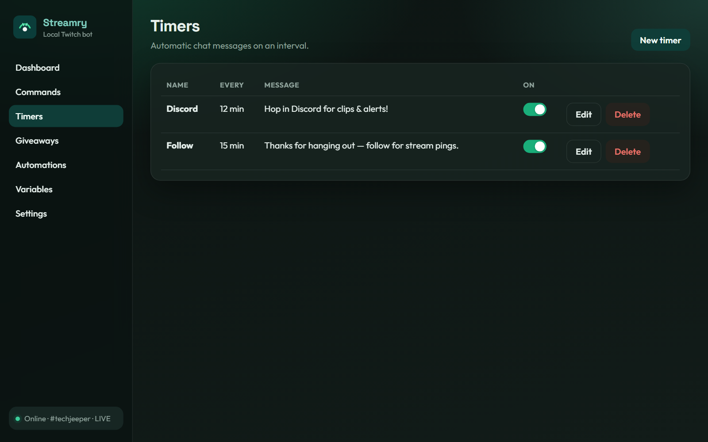
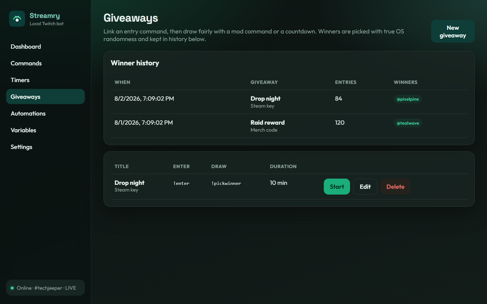

01
Commands & timers
Create chat triggers and interval messages with permissions, cooldowns, and one-click on/off toggles.
Stream-uh-ree
A local Twitch bot that keeps your commands, timers, and giveaways on your machine.

Features
Built for streamers who want control, fair giveaways, and a clean desktop workspace.
Create chat triggers and interval messages with permissions, cooldowns, and one-click on/off toggles.
Entry commands, countdown draws, and cryptographically strong winner selection — plus a winner history you can review later.
React to subs, raids, cheers, and go-live moments. Reuse custom
${name} variables across replies.
Bring over commands, timers, and variables from an export.stream ZIP in Settings — no retyping your whole bot config.
Device-code Twitch login, auto-connect on launch, tray minimize, start on boot, and backup/restore for your setup.
Inside the app
Real UI captures from Streamry — dark theme, tray-friendly, and ready for stream night.



Why local
Streamry runs beside OBS — not on someone else’s server.
Download
Installers are ready — grab the Windows setup EXE or the universal macOS DMG from the downloads page.